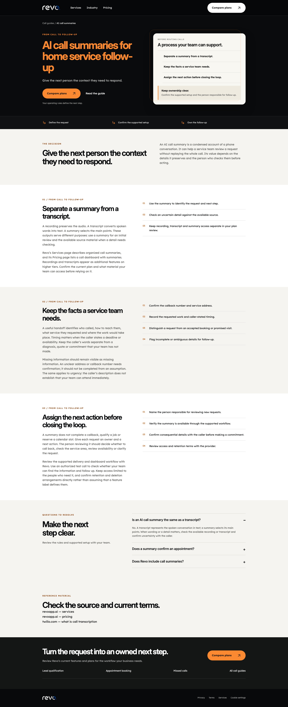
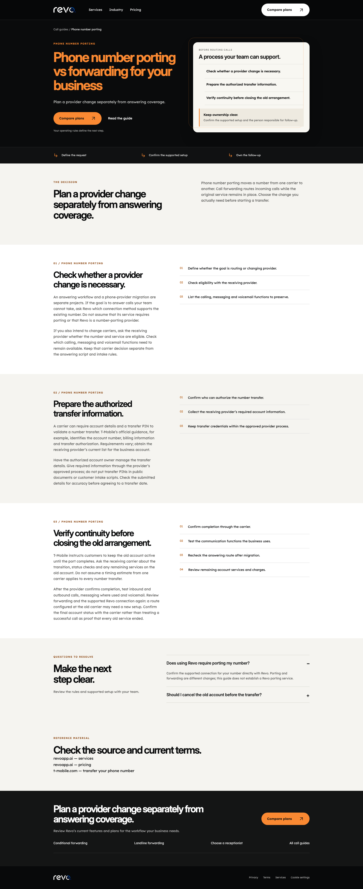

Twenty new Revo call guides
Local review only. None of these drafts has been published. Existing approved pages are preserved.
Open desktop/mobile comparison with the approved after-hours page
- business call recording — US volume 1000, KD 23; observed 2026-10-14
- call transcription — US volume 1000, KD 28; observed 2026-10-14
- warm transfer vs cold transfer — US volume 260, KD 19; observed 2026-10-14
- phone call answering script — US volume 260, KD 13; observed 2026-10-14
- how to choose a virtual receptionist service — US volume 70, KD 14; observed 2026-10-14
- virtual receptionist vs answering service difference — US volume 50, KD 12; observed 2026-10-14
- ai call summary — US volume 210, KD 29; observed 2026-10-14
- missed call text back — US volume 480, KD 18; observed 2026-10-14
- conditional call forwarding — US volume 320, KD 11; observed 2026-10-14
- how to forward calls from landline — US volume 480, KD 14; observed 2026-10-14
- call routing — US volume 1600, KD 37; observed 2026-10-14
- transfer call script — US volume 90, KD 16; observed 2026-10-14
- conditional call forwarding t mobile — US volume 110, KD 24; observed 2026-10-14
- conditional call forwarding verizon — US volume 140, KD 30; observed 2026-10-14
- phone number porting — US volume 590, KD 27; observed 2026-10-14
- pay as you go answering service — US volume 210, KD 14; observed 2026-10-14
- call screening service — US volume 260, KD 37; observed 2026-10-14
- how can i deactivate call forwarding — US volume 1900, KD 29; observed 2026-10-14
- automated appointment reminder — US volume 260, KD 11; observed 2026-10-14
- ivr system cost — US volume 70, KD 15; observed 2026-10-13
Representative pages
AI call summaries

Phone number porting
